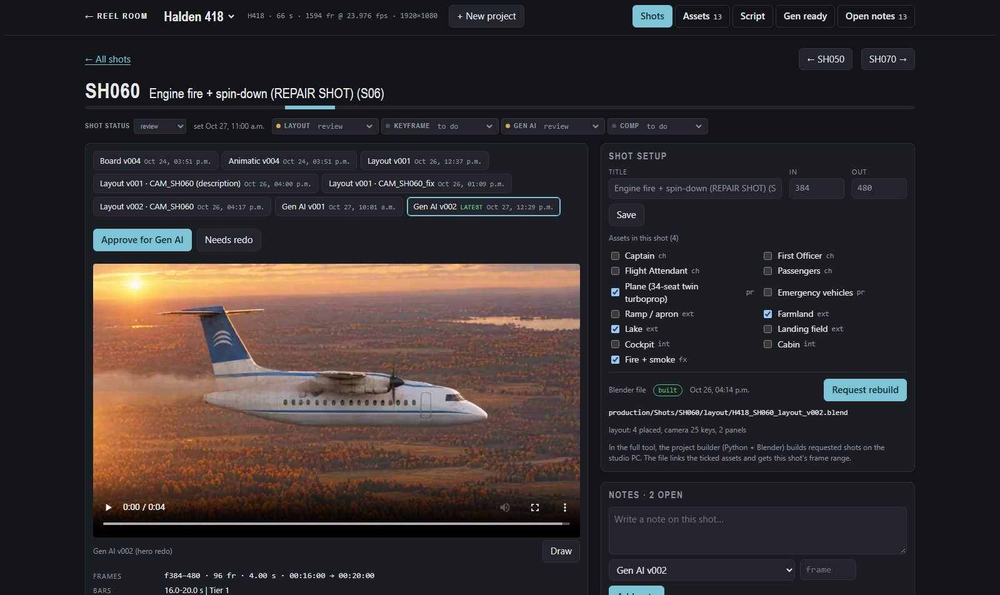
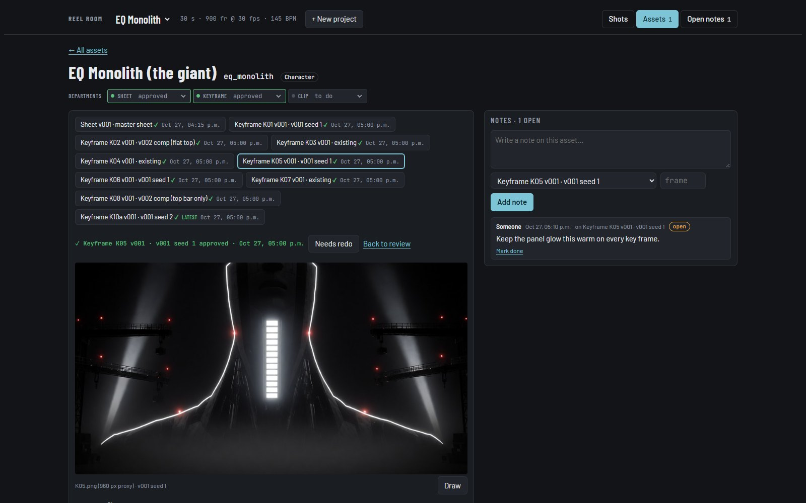

← Back to Lab

Reel Room · shot review for AI and 3D films

Shot page: every version of the shot in pipeline order, approval per department, notes and draw-overs.
Role
Design and build
Stack
JavaScript · Python · Blender
Built
October 2026
Status
In use on Halden 418 and EQ Monolith
Reel Room is my review room for Gen AI and 3D films. Every shot and every asset gets a page with all its versions, notes with draw-overs, and an approval per department. One pass of every shot, then notes, then one batched redo.
I designed it and directed the build with my agent setup: the AI wrote most of the code; the workflow, the review rules and the calls were mine. It's an in-house tool, not a public release. Ask me for a live demo.
Shot grid: each card shows the shot’s latest output, its status and open notes.

Asset page: design sheet and key frames as versions, each approved or sent back on its own.
What it does
Versions in pipeline order: board, animatic, layout, key frame, Gen AI, render, comp. A shot opens on its latest output.
Notes and draw-overs: on a whole shot, a version or a single frame.
Approvals: per department and per version; redo lists come straight from it.
Asset pages: character sheets, key frames, clips and models, versioned like shots.
Camera compare: alternative layout cameras side by side, pick one.
Full cut: every shot’s latest version played back to back.
Project builder: makes the folder tree and a Blender layout file per shot on my PC.